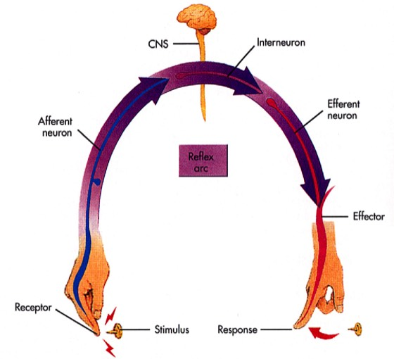

Indeling van neuronen
1) Functionele indeling:
Alle neuronen vallen binnen één van de drie functionele categorieën:
1) sensorische neuronen: vervoeren impulsen vanuit ‘de periferie’ naar het CZS (= afferent);
2) motorische neuronen: vervoeren impulsen van het CZS (of van ganglia) naar effectorcellen (= efferent);
3) interneuronen: schakelen sensorische en motorische neuronen aan elkaar in min of meer complexe netwerken. Tot deze laatste groep behoren nagenoeg 99% van alle neuronen in het zenuwstelsel.
Probeer het neuron functioneel te klasseren.

Voorbeeld van een ‘reflexboog’ die ervoor zorgt dat wanneer je jezelf prikt, je automatisch je vinger wegtrekt.
De keten van zenuwcellen die hiervoor nodig is de meest eenvoudige en omvat een afferent (sensorisch) neuron gekoppeld aan een sensorische receptorstructuur, een interneuron in het CZS (hier in het ruggenmerg) en een efferent (motorisch) neuron dat in contact staat met spiercellen van je vinger.
De keten van zenuwcellen die hiervoor nodig is de meest eenvoudige en omvat een afferent (sensorisch) neuron gekoppeld aan een sensorische receptorstructuur, een interneuron in het CZS (hier in het ruggenmerg) en een efferent (motorisch) neuron dat in contact staat met spiercellen van je vinger.
Vordering zelfstudie zenuwweefsel: